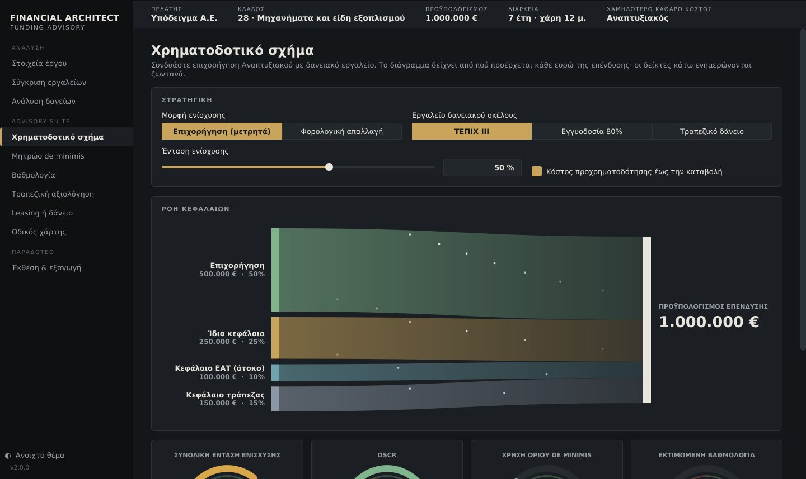
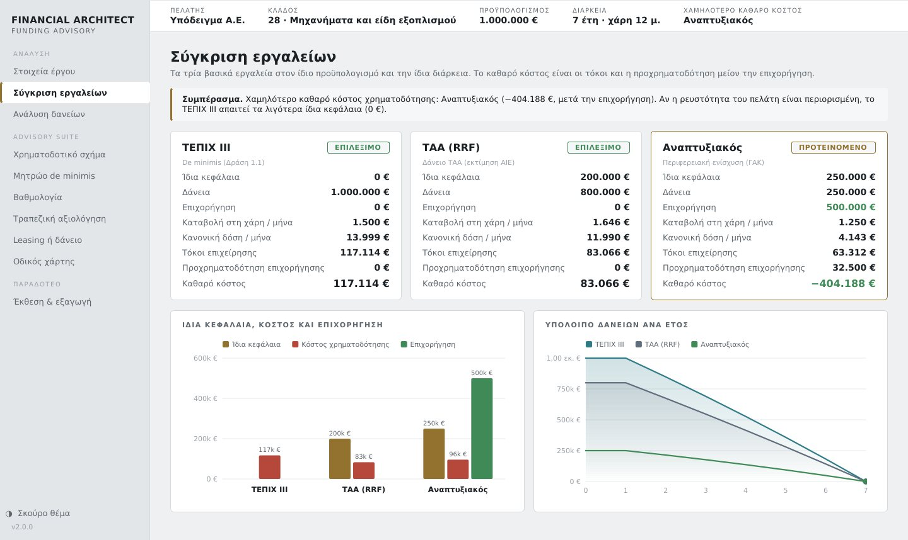
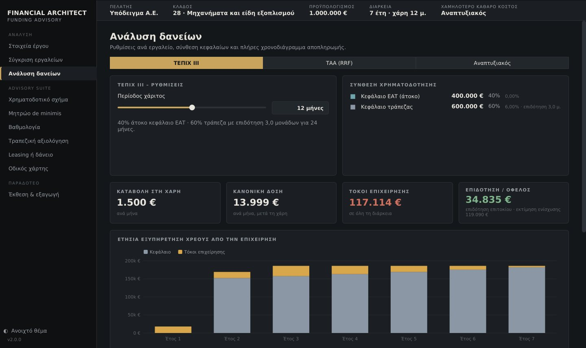
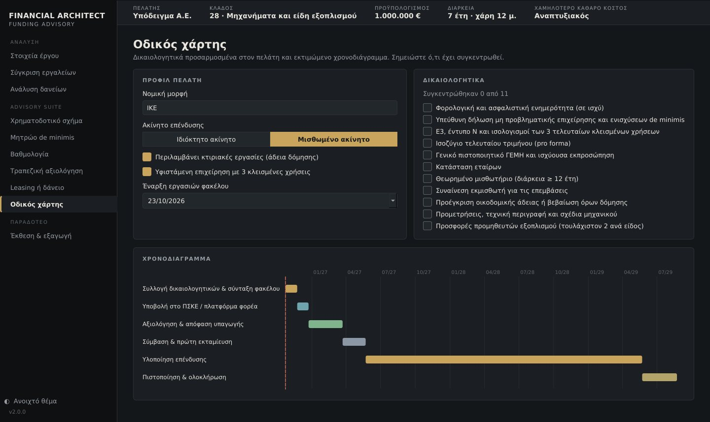

See it working
The source code stays private, as it supports client work. Below are screens from the software running on a fictional sample case, and the PDF study it generated for that case (read-only, watermarked). A live demo is available on request.
- Sample funding study (PDF)Generated by the software · 3 pages
The problem
A Greek SME planning an investment can fund it through overlapping instruments: TEPIX III loans with an interest-free share, Recovery and Resilience Facility loans, and Development Law grants. Each splits differently between grant, soft loan, bank loan and own funds, and each counts differently against state-aid limits. Consultants usually compare them by hand in spreadsheets, one client at a time, which is slow and easy to get wrong.
What it does

- Instrument comparison. Own funds, instalments, client interest, bridge-financing cost and net cost for each programme on the same budget and term, with a recommendation.
- Funding-mix builder. Combines a Development Law grant (cash or tax relief) with a TEPIX III, guarantee-fund or bank loan, and warns when combined aid exceeds the permitted intensity.
- Compliance and credit checks. A de minimis ledger with the 3-year rolling window, a score estimate, and a bankability test (DSCR, debt/equity, maximum affordable instalment).
- Leasing or loan. After-tax present-value comparison under Greek tax rules.
- Delivery. A tailored document checklist and timeline, then a written study exported to PDF and every repayment schedule to Excel.


How it is built
- Python and Qt (PySide6) desktop application, packaged with PyInstaller into a Windows .exe and a macOS app by an automated build on every change.
- A calculation engine separate from the interface, covered by automated tests. Every loan is computed from a real monthly schedule with grace periods and time-limited interest subsidies.
- Programme rules (rates, shares, limits, sector exclusions, scoring weights) live in a settings file, so a new call needs no code change.
- Hand-drawn, animated charts with no charting library; dark and light themes; cases saved as files.
What version 2 corrected
Rebuilding the original browser tool as tested software exposed calculation errors. The TEPIX III interest subsidy is now applied month by month as the programme specifies, which changed the interest on a sample €1M loan from €133,949 to €117,114. Instruments are ranked by net cost after the grant rather than by interest alone. The leasing comparison now follows art. 24 of Law 4172/2013, under which a finance lessee depreciates the asset instead of deducting the full rental.
